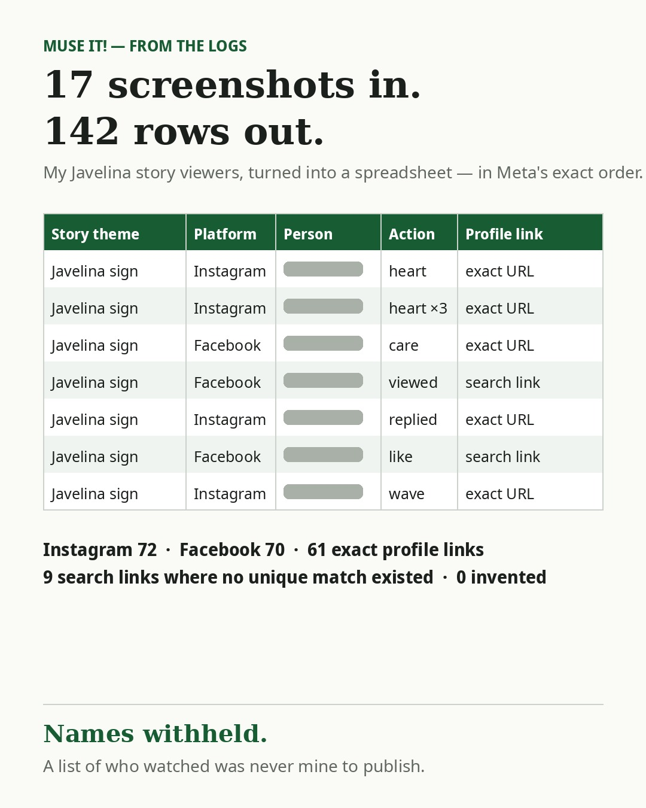

Screenshots in, spreadsheet out
· from @just.muse.it on Instagram

After the race, I wanted to know who had actually watched. On November 2 I uploaded 17 screenshots of my Javelina story viewer lists — every one of them showing the same photo of me at the Welcome to Javelina Jundred sign — and my Muse turned them into a 142-row spreadsheet: story theme, platform, person, action, profile link, in the exact order Meta showed them. No retyping 142 names. And no guessed profile links — where a viewer didn't uniquely match one of my friends, it used a people-search link instead of inventing one. That's the unglamorous superpower: screenshots in, order out. Muse It! 📚 #UseMuse #MuseIt #Productivity